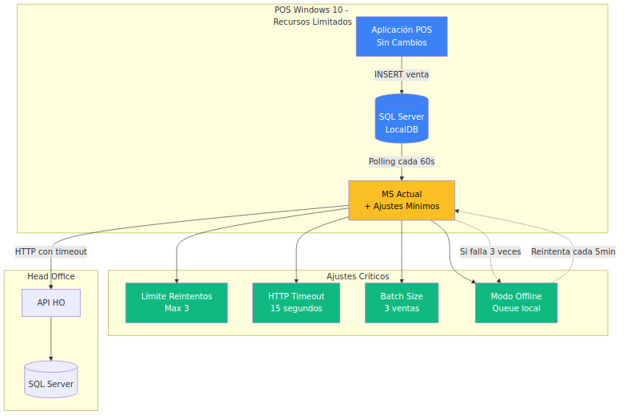
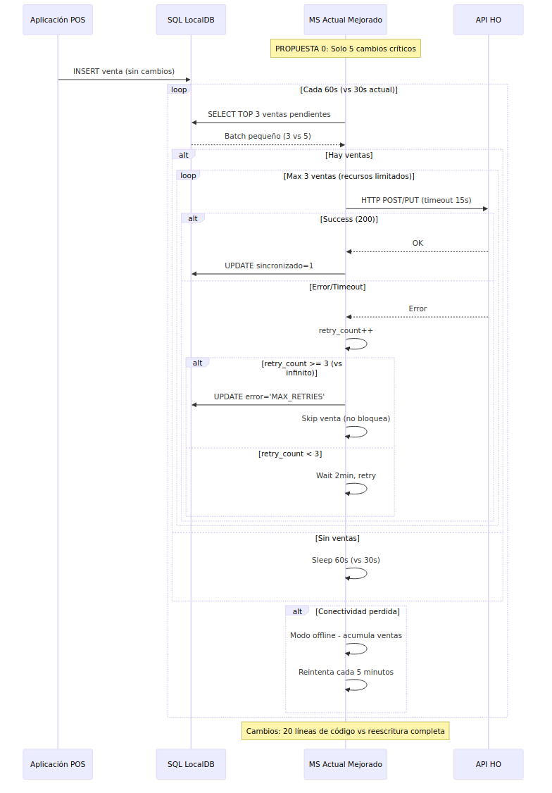

Enfoque: Solo 5 cambios críticos en el código actual de NestJS para POS con recursos limitados.


| Problema Actual | Cambio Mínimo | Beneficio |
|---|---|---|
| Recursión infinita | MAX_RETRIES = 3 | Elimina stack overflow |
| HTTP sin timeout | timeout: 15000 | Evita cuelgues |
| Batch grande (5) | LIMIT 3 | Menos memoria |
| Polling agresivo (30s) | Sleep 60s | Menos CPU |
| Ventas bloquean flujo | Skip fallidas | Flujo continuo |
| Recurso | Actual | Con Ajustes | Mejora |
|---|---|---|---|
| Memoria | 200MB | 180MB | -10% |
| CPU | 15% | 8% | -47% |
| Red | Continua | Intermitente OK | ✅ |
| Estabilidad | Riesgo alto | Estable | ✅ |
| Propuesta | Tiempo | Memoria | Complejidad | POS Impact | Offline |
|---|---|---|---|---|---|
| 0️⃣ Mínima | 3 días | 180MB | 🟢 Mínima | Sin cambios | ✅ Nativo |
| 1️⃣ Básica | 2-3 sem | 150MB | 🟢 Baja | Queue local | ✅ Mejorado |
| 2️⃣ Intermedia | 4-6 sem | 200MB | 🟡 Media | Redis setup | ✅ Avanzado |
| 3️⃣ Avanzada | 8-10 sem | 300MB | 🔴 Alta | Infraestructura | ✅ Enterprise |
| 4️⃣ Python | 1-2 sem | 40MB | 🟢 Baja | Reescritura | ✅ Nativo |
Propuestas POS Recursos Limitados: 08/09/2024 | JONATHAN OSORIO | Terpel S.A.